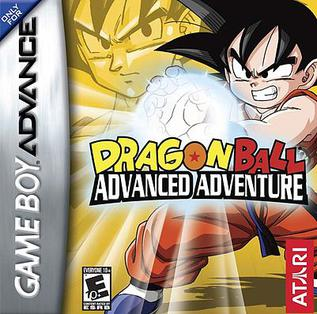
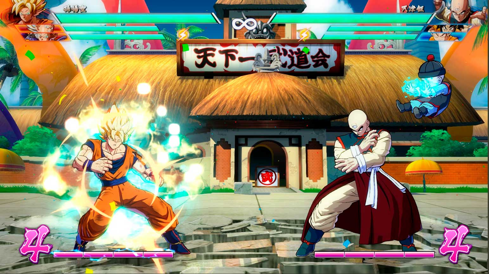
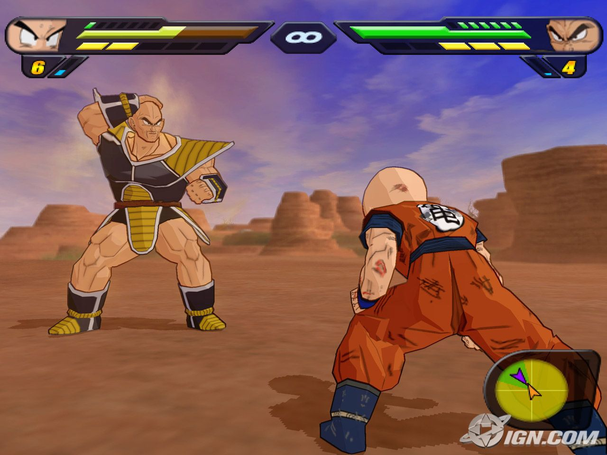
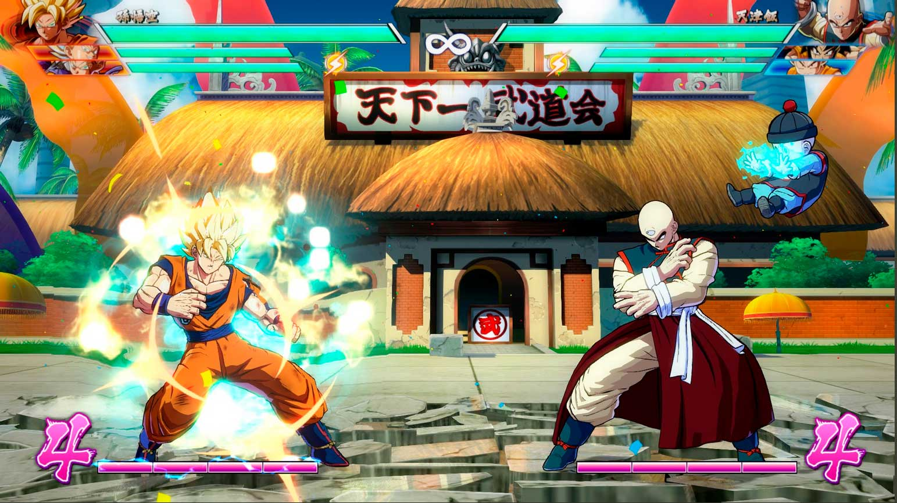
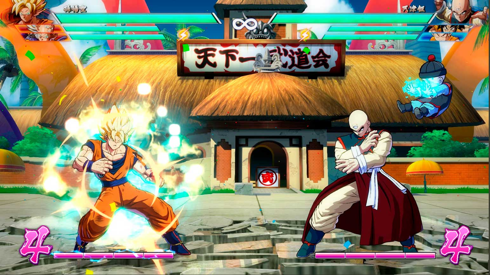
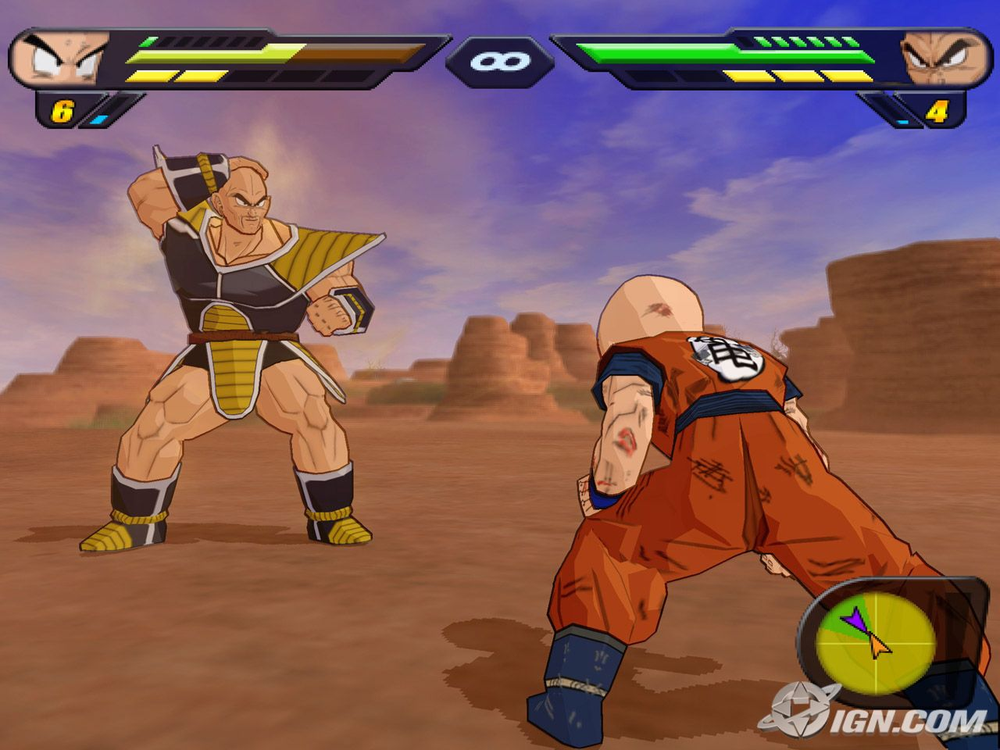
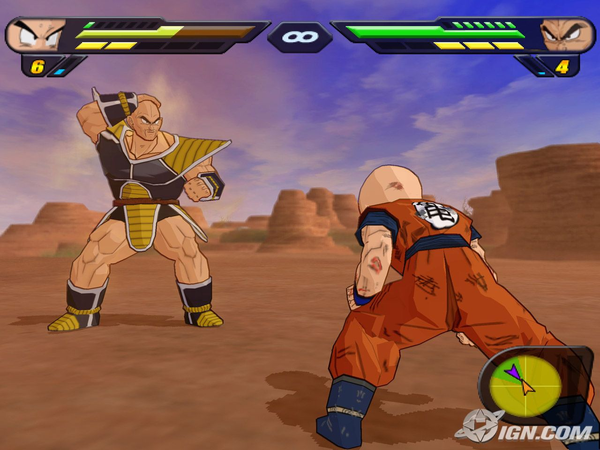

Com Ressalvas, Dragon Ball Z: Infinite World para PlayStation 2 é uma carta de amor aos fãs da saga. Reunindo momentos icônicos de Dragon Ball até o GT, o jogo oferece uma experiência nostálgica através de combates frenéticos e minigames divertidos que remetem a cenas clássicas. Controlar seus personagens favoritos em lutas explosivas e reviver a história com um toque interativo é inegavelmente empolgante.
No entanto, o jogo também apresenta suas limitações. A jogabilidade, apesar de fiel ao estilo "luta de arena" da série Budokai, pode parecer um pouco datada para jogadores mais novos. Além disso, a estrutura de "missões" para progredir na história pode se tornar repetitiva e menos envolvente do que a narrativa linear de outros títulos.
Em suma, Dragon Ball Z: Infinite World é um título recomendado principalmente para os entusiastas da franquia que buscam reviver os momentos marcantes da saga Z e além. Apesar de algumas arestas, a quantidade de conteúdo, personagens jogáveis e a forte dose de nostalgia garantem algumas horas de diversão para os fãs de Goku e seus amigos.

Uma pérola do Game Boy Advance, Advanced Adventure cobre o início da jornada de Goku com uma mistura deliciosa de ação side-scrolling, plataforma e combates um contra um. Reviver os primeiros arcos de Dragon Ball com controles responsivos e gráficos charmosos é uma experiência nostálgica e divertida, capturando a essência da aventura original.

Aclamado pela crítica, FighterZ eleva os jogos de luta de Dragon Ball a um novo patamar. Com gráficos estonteantes que parecem diretamente saídos do anime, um sistema de combate 3v3 frenético e estratégico, e um elenco vasto e icônico, FighterZ é uma experiência competitiva profunda e visualmente espetacular, agradando tanto fãs casuais quanto jogadores de luta hardcore.
Xenoverse 2 permite aos jogadores criar seu próprio Patrulheiro do Tempo e mergulhar em uma narrativa que altera a história de Dragon Ball. Com uma vasta gama de personalização, missões cooperativas e competitivas online, e a constante adição de conteúdo, Xenoverse 2 oferece uma experiência duradoura e envolvente no universo DBZ.
Supersonic Warriors no Game Boy Advance trouxe uma abordagem única com combates aéreos rápidos e a possibilidade de trocar de personagens em pleno confronto. Sua história cobria os principais arcos de DBZ com um estilo visual distinto e mecânicas de luta acessíveis e divertidas para um portátil.
Considerado por muitos como um dos melhores jogos de luta de Dragon Ball, Budokai 3 refinou a fórmula com um sistema de combate estratégico, o inovador Dragon Universe (um modo história imersivo) e a icônica dublagem japonesa. Sua fidelidade ao anime e a profundidade da jogabilidade o tornaram um clássico atemporal.

Tenkaichi 2 expandiu a fórmula de seu antecessor com um elenco massivo e combates em arenas 3D amplas. A possibilidade de reviver momentos chave da saga Z com cutscenes memoráveis e a liberdade de voar e lutar em cenários destrutíveis tornaram este um favorito dos fãs, apesar de alguns controles menos intuitivos.
Exclusivo do PSP, Another Road expande a experiência Shin Budokai com uma nova história focada no futuro de Trunks. Mantendo a jogabilidade de luta rápida e aérea da série, o jogo oferece um enredo interessante e personagens desbloqueáveis, sendo uma adição valiosa para os fãs portáteis de Dragon Ball.
A culminação da série Tenkaichi, este título apresentou o maior elenco de personagens da franquia em um jogo de luta de Dragon Ball. Com combates ainda mais rápidos, aprimoramentos na jogabilidade e a inclusão de sagas como Dragon Ball GT, Tenkaichi 3 é amplamente considerado o ápice da experiência de luta 3D em arenas de Dragon Ball.
Dragon Ball Online, o pioneiro MMORPG da série, surgiu na Coreia em 2010. Embora nunca tenha chegado oficialmente ao Ocidente, a dedicação de fãs possibilitou o acesso através de servidores privados. Ambientado em um futuro distante da saga Z, DBO oferecia a experiência tradicional de MMO com a imersão no universo de Dragon Ball, incluindo raças, classes e progressão. Sua verdadeira relevância reside na antecipação de elementos narrativos e conceituais que se tornariam pilares de Dragon Ball Heroes e Xenoverse, como a Patrulha do Tempo e os icônicos Towa e Mira. Dragon Ball Online não foi apenas um jogo; foi um divisor de águas que moldou a trajetória da franquia.
 

 
